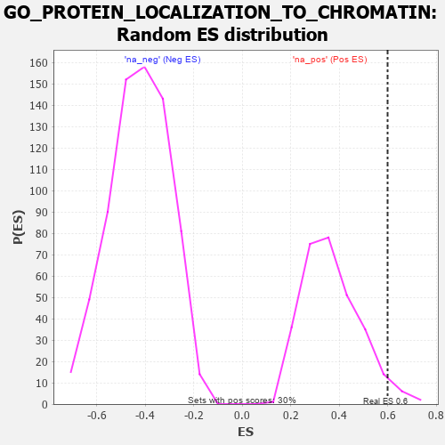

| | | Dataset | 7d |
| Phenotype | NoPhenotypeAvailable |
| Upregulated in class | na_pos |
| GeneSet | GO_PROTEIN_LOCALIZATION_TO_CHROMATIN |
| Enrichment Score (ES) | 0.59956455 |
| Normalized Enrichment Score (NES) | 1.6294285 |
| Nominal p-value | 0.033557046 |
| FDR q-value | 0.2206181 |
| FWER p-Value | 1.0 |
Table: GSEA Results Summary
 Fig 1: Enrichment plot: GO_PROTEIN_LOCALIZATION_TO_CHROMATIN
Fig 1: Enrichment plot: GO_PROTEIN_LOCALIZATION_TO_CHROMATIN
Profile of the Running ES Score & Positions of GeneSet Members on the Rank Ordered List
| PROBE | GENE SYMBOL | GENE_TITLE | RANK IN GENE LIST | RANK METRIC SCORE | RUNNING ES | CORE ENRICHMENT | | 1 | MCM8 | | | 646 | 0.578 | 0.0320 | Yes |
| 2 | RAD21 | | | 779 | 0.538 | 0.1206 | Yes |
| 3 | SGF29 | | | 840 | 0.521 | 0.2152 | Yes |
| 4 | HDAC8 | | | 881 | 0.510 | 0.3100 | Yes |
| 5 | CARM1 | | | 1413 | 0.408 | 0.3230 | Yes |
| 6 | CHMP7 | | | 1435 | 0.403 | 0.3993 | Yes |
| 7 | MRNIP | | | 1743 | 0.346 | 0.4285 | Yes |
| 8 | WAPL | | | 1758 | 0.344 | 0.4940 | Yes |
| 9 | MSH2 | | | 1819 | 0.334 | 0.5518 | Yes |
| 10 | TASOR | | | 1931 | 0.316 | 0.5996 | Yes |
| 11 | LRWD1 | | | 3582 | 0.063 | 0.4045 | No |
| 12 | NIPBL | | | 3900 | 0.010 | 0.3666 | No |
| 13 | MCM9 | | | 4163 | -0.036 | 0.3407 | No |
| 14 | SETD2 | | | 4443 | -0.084 | 0.3220 | No |
| 15 | ESCO2 | | | 4605 | -0.119 | 0.3251 | No |
| 16 | PLK1 | | | 6082 | -0.500 | 0.2374 | No |
Table: GSEA details [plain text format]

Fig 2: GO_PROTEIN_LOCALIZATION_TO_CHROMATIN: Random ES distribution
Gene set null distribution of ES for GO_PROTEIN_LOCALIZATION_TO_CHROMATIN